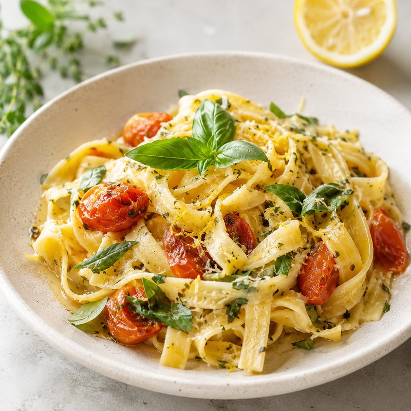

A family-owned restaurant in the heart of Arcadia, serving traditional Mediterranean recipes with a modern twist. Book your table online in under a minute — no phone call needed.

Hand-rolled pasta, slow-roasted tomato, basil & a whisper of citrus.
Pick a date, time and party size — confirmed instantly.
Get an email you can show at the door. No more no-shows.
Designed for your phone, on the go, any time of day.
Mediterranean classics made with local Gauteng produce.
A short taste of what's cooking. See the full menu →